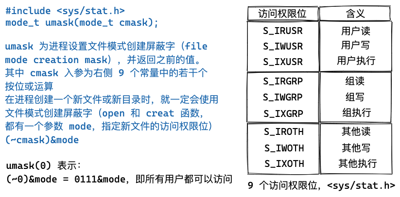
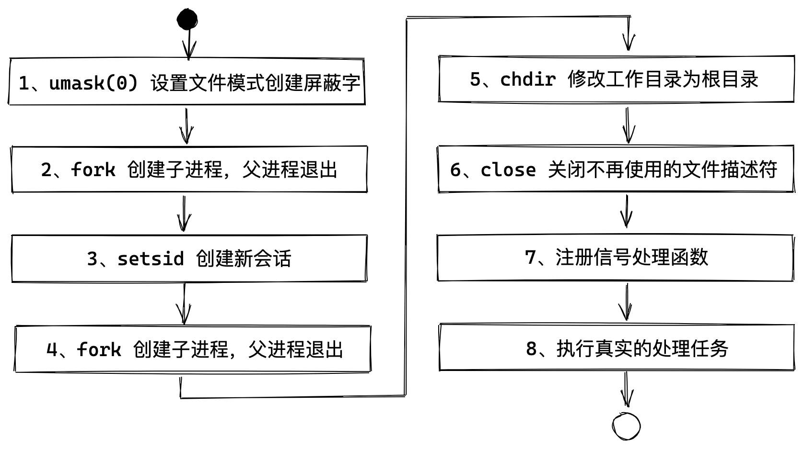

Table of contents
什么是 Daemon？
守护进程（daemon）是生存期长的一种进程。它们常常在系统引导装入时启动，仅在系统关闭时才终止。因为它们没有控制终端，所以说它们是在后台运行的。Unix 中有很多守护进程，它们执行系统任务。
什么时候需要写一个 Daemon
日常工作中，我们经常需要写一个脚本来处理一些事情，例如：
- 消息推送；
- 与商户系统进行对账；
- 数据迁移；
- 商户后台系统健康度监测；
- 其他的一些处理任务，etc……
其实说是 Daemon，但这里更多的案例是定时任务，使用 crontab 定时拉起 Daemon 进行任务处理。
一般我们就是撸起袖子开干：
- 使用 Cpp 写一个 main，对文件中的每一行进行处理
- 编写 Shell 脚本
- SED 分割文件
- for 循环 main 二进制，拉起的进程数等于分割的文件数
- AWK 处理输出日志，进行后续处理
第 2 步中的 Shell 文件，使用 nohup ./xxx.sh & 进行执行
&通过一个子进程（作为当前 Shell 的子进程）在后台运行./xxx.sh，「后台任务 background job」- 终端执行了一次
fork，让待执行的命令作为子进程运行，不阻塞终端窗口输入；此后台任务没有获得控制终端，不能接收输入（但是可以往终端输出信息）
- 终端执行了一次
nohup设置忽略SIGHUP信号
nohup 和 & 一起作用，让命令在后台执行。我们要问，这样运行起来的是 Daemon 守护进程吗？一起来看看 Daemon 的特征吧。
Daemon 的特征
我们先看一下常用的系统守护进程：ps -axj，-a 显示由其他用户所拥有的进程的状态，-x 显示没有控制终端的进程状态，-j 显示与作业有关的信息：会话 ID、进程组 ID、控制终端以及终端进程组 ID。
$ ps -axj
PPID PID PGID SID TTY UID TIME COMMAND
0 1 1 1 ? 0 40:01 /usr/lib/systemd/systemd --switched-root --system --deserialize 22
0 2 0 0 ? 0 0:02 [kthreadd]
2 3 0 0 ? 0 0:10 [ksoftirqd/0]
2 5 0 0 ? 0 0:00 [kworker/0:0H]
2 7 0 0 ? 0 0:31 [migration/0]
2 8 0 0 ? 0 0:00 [rcu_bh]
2 9 0 0 ? 0 121:34 [rcu_sched]
2 48 0 0 ? 0 0:00 [netns]
2 52 0 0 ? 0 0:00 [bioset]
2 53 0 0 ? 0 0:00 [crypto]
2 75 0 0 ? 0 0:00 [cciss_scan]
2 76 0 0 ? 0 0:00 [nvme]
2 97 0 0 ? 0 0:00 [ipv6_addrconf]
2 155 0 0 ? 0 0:00 [kauditd]
按照顺序，各列标题分别对应为：父进程 ID、进程 ID、进程组 ID、会话 ID、终端名称、用户 ID、命令字符串。
父进程 ID 为 0 的各进程通常是内核进程，它们作为系统引导装入过程的一部分而启动（init 是个例外，它是一个由内核在引导装入时启动的用户层次的命令）。内核进程是特殊的，通常存在于系统的整个生命周期中。它们以 root 特权运行，无控制终端，无命令行。
进程 1 通常是 init（目前打印出来的是 systemd1），它是一个系统守护进程，除了其他工作外，主要负责启动各运行层次特定的系统服务。这些服务通常是在它们自己拥有的守护进程的帮助下实现的。
注意，大多数守护进程都是以 root 特权运行。所有的守护进程都没有控制终端，其终端名设置为问号。内核守护进程以无控制终端方式启动。用户层守护进程缺少控制终端可能是守护进程调用了 setsid 的结果。大多数用户层守护进程都是进程组的组长进程以及会话的首进程，而且是这些进程组和会话中的唯一进程（rsyslogd 是一个例外）。最后，所有的用户层守护进程的父进程都是 init 进程。
会话、进程组、控制终端
每个进程除了有一个进程 ID 外，还属于一个进程组。进程组是一个或多个进程的集合。进程组之于进程，类似于文件夹之于文件，主要是为了方便管理，同一个进程组中的各进程接受来自同一个终端的各种信号。
每个进程组有一个唯一的进程组 ID。
每个进程组有一个组长进程（leader process）。组长进程的进程组 ID 等于其进程 ID。
-> 一个进程组的进程组 ID == 该进程组组长进程的进程 ID
会话（session）是一个或多个进程组的集合，被分为一个前台进程组（foreground process group）以及一个或多个后台进程组（background process group）。
一个会话可以有一个控制终端（controlling terminal），通常是终端设备（在终端登录情况下）或伪终端设备（在网络登录情况下）。和控制终端建立连接的会话首进程被称为控制进程（controlling process）。通常，我们不必担心控制状态，登录时，将自动建立控制终端。
进程组、会话和控制终端的关系，如下图所示。

图 1 - 进程组、会话和控制终端的关系
nohup & 运行起来的是 Daemon 吗？
现在，我们可以回答这个问题了，nohup ./xxx.sh & 运行起来的后台作业（background job）与 Daemon，二者还是有区别的，虽然后台作业可以在一定程度上不受控制终端约束，可达到控制终端退出后自己仍然运行的目的，但是还有几个问题：
- 关闭终端后会发送
SIGHUP信号给会话首进程（session leader），会话首进程在收到后会进行信号处理，其处理方式依赖于系统实现和系统配置，可能导致后台作业同步退出。 - 控制终端退出了，但后台作业还是可以往终端输出信息；而守护进程是无控制终端的。
- Unix/Linux 的进程会继承父进程的很多特性，例如文件掩码（mask）、当前工作目录、已打开的文件句柄、信号处理等，可能导致进程本身和环境依赖相关，应该重置。
那写 Daemon 的正确姿势是什么样的呢？
Daemon 编程最佳实践
在大多数 Unix 系统中，守护进程是一直存在的。为了初始化我们自己的进程，使之作为守护进程运行，需要一些审慎的思索。在编写守护进程时需遵循一些基本规则，以防止产生不必要的交互作用。
1、调用 umask2 将文件模式创建屏蔽字设置为一个已知值（通常是 0）。子进程继承得来的父进程的文件模式创建屏蔽字，可能会被设置为拒绝某些权限。因此，将文件模式创建屏蔽字设置为 0，可以大大增强子进程的灵活性。

图 2 - umask(0)
2、调用 fork，然后父进程 exit。父进程终止会让 Shell 认为这个命令已经执行完毕，同时虽然子进程继承了父进程的进程组 ID，但其进程 ID 是新分配的，二者不可能相等，这就保证了子进程不是一个进程组的组长进程（为接下来第 3 步调用 setsid 做好准备）。
在调用了 fork 函数后，子进程全盘拷贝了父进程的会话、进程组、控制终端等，虽然父进程退出了，但会话、进程组、控制终端等并没有改变，因此，这还不是真正意义上的独立开来。接下来，
3、调用 setsid3 创建一个新会话。针对会话、进程组、控制终端执行三个步骤：
-
（i）摆脱原会话的控制：该进程成为新会话的首进程（session leader，会话首进程是创建该会话的进程），此时，该进程是新会话中的唯一进程；
-
（ii）摆脱原进程组的控制：该进程成为一个新进程组的组长进程。新建成进程组 ID 是该调用进程的进程 ID；
-
（iii）摆脱控制终端：该进程没有控制终端。如果在调用
setsid之前该进程有一个控制终端，那么与该终端的联系被解除。
4、再次调用 fork，父进程 exit，继续使用子进程中的守护进程。这样就保证了该守护进程不会是会话首进程，可以防止它取得控制终端（因为作为无控制终端的进程组的组长进程，它可以重新申请打开一个控制终端）。
5、将当前工作目录更改为根目录 chdir("/")。从父进程继承过来的当前目录可能在一个挂载的文件系统中，以防该文件系统在守护进程的执行期间不能被卸载。
6、关闭不再需要的文件描述符，使得守护进程不再持有从其父进程继承而来的任何文件描述符。
7、注册信号处理函数4。
8、执行处理任务。
The Linux Programming Interface 提供了一个创建 Daemon 守护进程的代码片段 become_daemon.c5，当然 Unix 环境高级编程第 13 章也给到了详细的代码示例6，可以下载后进入 daemons 目录查看。

图 3 - Daemon 编程最佳实践
单实例 Daemon
为了正常运行，某些守护进程会实现为，在任一时刻只运行该守护进程的一个副本。例如，对 cron 守护进程而言，如果同时有多个实例运行，那么每个副本都可能试图开始某个预定的操作，于是造成该操作的重复执行，这很可能导致错误。
文件和记录锁机制可以保证一个守护进程只有一个副本在运行。如果每一个守护进程创建一个有固定名字的文件，并在该文件的整体上加一把锁，那么只允许创建一把这样的写锁。在此之后创建写锁的所有尝试都会失败，这向后续守护进程的副本指明已有一个副本正在运行。
文件和记录锁7提供了一种方便的互斥机制。如果守护进程在一个文件的整体上得到一把写锁，那么在该守护进程终止时，这把锁将被自动删除。
The Linux Programming Interface 提供了一个创建 PID 文件代码片段 create_pid_file.c8
/*
struct flock {
off_t l_start; // starting offset
off_t l_len; // len = 0 means until end of file
pid_t l_pid; // lock owner
short l_type; // lock type: read/write, etc.
short l_whence; // type of l_start
};
*/
/* Lock a file region using nonblocking F_SETLK */
int lockFile(int fd, int type, int whence, int start, int len) {
struct flock fl;
fl.l_type = type;
fl.l_whence = whence;
fl.l_start = start;
fl.l_len = len;
return fcntl(fd, F_SETLK, &fl);
}
#define BUF_SIZE 100 /* Large enough to hold maximum PID as string */
int createPidFile(const char* progName, const char* pidFile, int flags) {
int fd;
char buf[BUF_SIZE];
fd = open(pidFile, O_RDWR | O_CREAT, 0666);
if (fd == -1) {
errExit("Could not open PID file %s", pidFile);
}
if (flags & CPF_CLOEXEC) {
/* Set the close-on-exec file descriptor flag */
flags = fcntl(fd, F_GETFD); /* Fetch flags */
if (flags == -1) {
errExit("Could not get flags for PID file %s", pidFile);
}
flags |= FD_CLOEXEC; /* Turn on FD_CLOEXEC */
if (fcntl(fd, F_SETFD, flags) == -1) {
/* Update flags */
errExit("Could not set flags for PID file %s", pidFile);
}
}
if (lockFile(fd, F_WRLCK, SEEK_SET, 0, 0) == -1) {
if (errno == EAGAIN || errno == EACCES) {
fatal("PID file '%s' is locked; probably '%s' is already running", pidFile, progName);
} else {
errExit("Unable to lock PID file '%s'", pidFile);
}
}
if (ftruncate(fd, 0) == -1) {
errExit("Could not truncate PID file '%s'", pidFile);
}
snprintf(buf, BUF_SIZE, "%ld\n", (long)getpid());
if (write(fd, buf, strlen(buf)) != strlen(buf)) {
fatal("Writing to PID file '%s'", pidFile);
}
return fd;
}
1、open(pidfile, O_RDWR | O_CREAT) 打开或新建一个文件，返回对应的文件描述符 fd。
2、flags |= FD_CLOEXEC 对所有被执行程序不需要的文件描述符设置执行时关闭（close-on-exec）标识；
3、fcntl(fd, F_SETLK, &fl) 对 pidFile 文件加锁（排它锁）
l_len = 0表示锁的范围可以扩展到最大可能偏移量。这意味着不管向该文件中追加写了多少数据，它们都可以处于锁的范围内，而且起始位置可以是文件中的任意一个位置- 为了对整个文件进行加锁，设置
l_start和l_whence指向文件的起始位置，并且指定长度（l_len）为 0 l_type可以表示三种类型：F_RDLCK（共享性读锁）、F_WRLCK（独占性写锁）或F_UNLCK（解锁一个区域）- 两种类型的锁：共享性读锁（
F_RDLCK）和独占性写锁（F_WRLCK），基本规则是：任意多个进程在一个给定的字节上可以有一把共享的读锁，但是在一个给定的字节上只能有一个进程有一把独占锁。进一步解释，如果在一个给定字节上已经有一把或多把读锁，则不能在该字节上再加写锁；如果在一个字节上已经有一把独占性写锁，则不能在对它加任何读锁。下图表示了这些兼容性规则：

图 4 - 不同类型锁彼此之间的兼容性
F_SETLK如果我们试图获取一把读锁或写锁，而上述的兼容性规则阻止系统给我们这把锁，那么fcntl会立即出错返回，此时errno设置为EACCES或EAGAIN
4、ftruncate(fd, 0) 将文件长度截断为 0。其原因是之前的守护进程实例的进程 ID 字符串可能长于调用此函数的当前进程 ID 字符串。例如，之前的守护进程的进程 ID 是 12345，当前实例的进程 ID 是 9999，那么将此进程 ID 写入文件后，在文件中留下的是 99995。将文件长度截断为 0 就解决了此问题。
5、write(fd, strPid, strlen(strPid) 将进程 pid 写入文件。后续当有实例启动执行时，会试图调用 fcnt(fd, F_SETLK, &fl) 对 pidFile 进行加锁，会执行失败（由于已经有一个进程持有了排它锁），表示已有副本正在运行。
总结
至此，我们从 Daemon 的特征入手，讨论了其与 nohup + & 启动后台作业的区别，进而介绍构建 Daemon 的最佳实践，以及如何保证 Daemon 的单实例执行。读者可以从本文中给到的 Demo 入手，运行起来。
画图工具
文中的图片使用 excalidraw 绘制
版权声明
本作品采用知识共享署名 4.0 国际许可协议进行许可，转载时请注明原文链接。
References
-
LINUX PID 1 和 SYSTEMD https://coolshell.cn/articles/17998.html ↩︎
-
setsid https://man7.org/linux/man-pages/man2/setsid.2.html ↩︎
-
Unix 环境高级编程 第 10 章 - 信号 ↩︎
-
Linux/UNIX系统编程手册 https://www.man7.org/tlpi/code/online/dist/daemons/become_daemon.c.html ↩︎
-
APUE Source Code http://www.apuebook.com/code3e.html ↩︎
-
Unix 环境高级编程 第 14 章 - 高级I/O - 14.3 记录锁 ↩︎
-
Linux/UNIX系统编程手册 https://www.man7.org/tlpi/code/online/dist/filelock/create_pid_file.c.html ↩︎